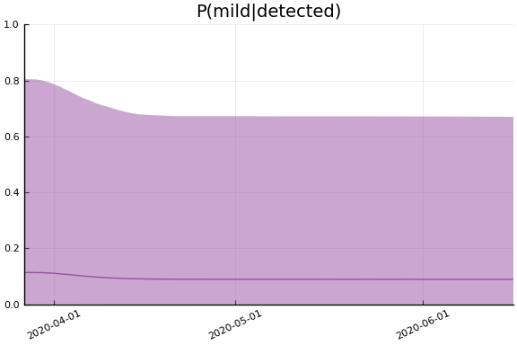
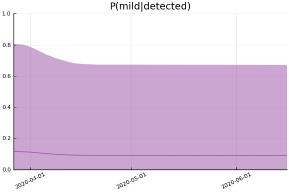

This work is licensed under a Creative Commons Attribution-ShareAlike 4.0 International License
using CovidSEIR, Plots, DataFrames, JLD2, StatsPlots, MCMCChains
Plots.pyplot()
jmddir = normpath(joinpath(dirname(Base.find_package("CovidSEIR")),"..","docs","jmd"))
covdf = covidjhudata();
Canada¶
We estimate the model with the following code. It takes about an hour.
canada = CountryData(covdf, "Canada");
using Turing
canmod = CovidSEIR.TimeVarying.countrymodel(canada)
cc = Turing.psample(canmod, NUTS(0.65), 5000, 4)
import JLD2
JLD2.@save "$jmddir/canada_$(Dates.today()).jld2" cc
JLD2.@load "$jmddir/canada_dhmc_2020-04-13.jld2" cc dayt0;
cc = MCMCChains.Chains(collect(cc.value.data), replace.(cc.name_map.parameters, r"([^\[])([1-9])" => s"\1[\2]"))
Object of type Chains, with data of type 5000×15×4 Array{Float64,3}
Iterations = 1:5000
Thinning interval = 1
Chains = 1, 2, 3, 4
Samples per chain = 5000
parameters = τ, sigD, sigC, sigRc, a, pE0, p[1], p[2], β[1], β[2], β
[3], γ[1], γ[2], ρ[1], ρ[2]
2-element Array{MCMCChains.ChainDataFrame,1}
Summary Statistics
parameters mean std naive_se mcse ess r_hat
────────── ──────── ──────── ──────── ────── ──────── ──────
τ 0.2357 0.6185 0.0044 0.0434 80.3213 2.7437
sigD 6.5869 0.8252 0.0058 0.0488 84.3120 1.2775
sigC 663.0470 132.2966 0.9355 8.8404 80.3213 2.0702
sigRc 109.1233 8.8844 0.0628 0.4840 122.8527 1.1655
a 0.6428 0.2756 0.0019 0.0193 80.3213 2.8064
pE0 0.0000 0.0000 0.0000 0.0000 80.3213 1.8518
p[1] 0.0819 0.2048 0.0014 0.0143 80.3213 2.3034
p[2] 0.0054 0.0035 0.0000 0.0002 80.3213 4.0799
β[1] 0.2341 0.2845 0.0020 0.0186 80.3213 1.3055
β[2] 0.6854 0.5439 0.0038 0.0373 80.3213 1.8702
β[3] 3.4579 0.8677 0.0061 0.0608 80.3213 2.7532
γ[1] 2.1268 1.0667 0.0075 0.0754 80.3213 4.6674
γ[2] 0.0439 0.0157 0.0001 0.0011 80.3213 3.1084
ρ[1] 0.2345 0.3476 0.0025 0.0244 80.3213 4.3679
ρ[2] 56.7301 23.8913 0.1689 1.6324 80.3213 1.8519
Quantiles
parameters 2.5% 25.0% 50.0% 75.0% 97.5%
────────── ──────── ──────── ──────── ──────── ────────
τ 0.0000 0.0000 0.0001 0.0010 2.2230
sigD 5.2897 6.0577 6.3179 7.1150 8.5042
sigC 340.9755 643.1188 676.1973 738.0302 872.2481
sigRc 92.9782 103.0199 110.7701 112.5595 129.1059
a 0.1631 0.3985 0.6762 0.9309 0.9894
pE0 0.0000 0.0000 0.0000 0.0000 0.0000
p[1] 0.0028 0.0038 0.0044 0.0163 0.8283
p[2] 0.0039 0.0040 0.0041 0.0041 0.0163
β[1] 0.0000 0.0002 0.0995 0.4113 0.8889
β[2] 0.0241 0.1801 0.5443 1.3260 1.5558
β[3] 1.2217 3.3502 3.6691 3.9622 4.6629
γ[1] 0.0171 2.2217 2.6733 2.7457 2.9976
γ[2] 0.0338 0.0380 0.0381 0.0401 0.0932
ρ[1] 0.0000 0.0004 0.0050 0.5601 0.9289
ρ[2] 24.6373 24.7181 67.2189 71.7995 99.9910
Estimates¶
plot(cc)

We can see that there might be convergence issues. There are large differences between the four chains for some parameters.
describe(cc)
2-element Array{MCMCChains.ChainDataFrame,1}
Summary Statistics
parameters mean std naive_se mcse ess r_hat
────────── ──────── ──────── ──────── ────── ──────── ──────
τ 0.2357 0.6185 0.0044 0.0434 80.3213 2.7437
sigD 6.5869 0.8252 0.0058 0.0488 84.3120 1.2775
sigC 663.0470 132.2966 0.9355 8.8404 80.3213 2.0702
sigRc 109.1233 8.8844 0.0628 0.4840 122.8527 1.1655
a 0.6428 0.2756 0.0019 0.0193 80.3213 2.8064
pE0 0.0000 0.0000 0.0000 0.0000 80.3213 1.8518
p[1] 0.0819 0.2048 0.0014 0.0143 80.3213 2.3034
p[2] 0.0054 0.0035 0.0000 0.0002 80.3213 4.0799
β[1] 0.2341 0.2845 0.0020 0.0186 80.3213 1.3055
β[2] 0.6854 0.5439 0.0038 0.0373 80.3213 1.8702
β[3] 3.4579 0.8677 0.0061 0.0608 80.3213 2.7532
γ[1] 2.1268 1.0667 0.0075 0.0754 80.3213 4.6674
γ[2] 0.0439 0.0157 0.0001 0.0011 80.3213 3.1084
ρ[1] 0.2345 0.3476 0.0025 0.0244 80.3213 4.3679
ρ[2] 56.7301 23.8913 0.1689 1.6324 80.3213 1.8519
Quantiles
parameters 2.5% 25.0% 50.0% 75.0% 97.5%
────────── ──────── ──────── ──────── ──────── ────────
τ 0.0000 0.0000 0.0001 0.0010 2.2230
sigD 5.2897 6.0577 6.3179 7.1150 8.5042
sigC 340.9755 643.1188 676.1973 738.0302 872.2481
sigRc 92.9782 103.0199 110.7701 112.5595 129.1059
a 0.1631 0.3985 0.6762 0.9309 0.9894
pE0 0.0000 0.0000 0.0000 0.0000 0.0000
p[1] 0.0028 0.0038 0.0044 0.0163 0.8283
p[2] 0.0039 0.0040 0.0041 0.0041 0.0163
β[1] 0.0000 0.0002 0.0995 0.4113 0.8889
β[2] 0.0241 0.1801 0.5443 1.3260 1.5558
β[3] 1.2217 3.3502 3.6691 3.9622 4.6629
γ[1] 0.0171 2.2217 2.6733 2.7457 2.9976
γ[2] 0.0338 0.0380 0.0381 0.0401 0.0932
ρ[1] 0.0000 0.0004 0.0050 0.5601 0.9289
ρ[2] 24.6373 24.7181 67.2189 71.7995 99.9910
The parameter estimates are generally not very precise.
Fit¶
sdf = simtrajectories(cc, canada, 1:200)
f = plotvars(sdf, canada)
f.fit

In this figure, solid lines are observed data, dashed lines are posterior means, and the shaded region is a pointwise 90% credible interval.
Implications¶
We now look at the model’s projections for some observed and unobserved variables.
for fig in f.trajectories
display(fig)
end


 
 
In general we see a similar pattern as noted above: the posteriors for observed variables are fairly precise. However, the posteriors for unobserved variables, such as the portion of undetected infections and the portion of mild infections, are very imprecise.